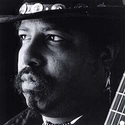

Блюзу не учатся. Блюз должен быть в крови. Сегодня существуют настоящие блюзовые династии. Но ярчайшим из всех «наследных блюзменов» является Джимми Ди Лейн (Jimmy D. Lane).«Из-за того, что я сын легендарного музыканта, люди думают, что я появился на свет с гитарой в руках,» - сетует Джимми. Но не для кого путь в блюз не бывает коротким. И он перепробовал множество гражданских и одну военную профессию. И только потом решился брать деньги за то, что люди слушают его гитарную игру. Только когда удостоверился, что ему следует играть блюз. Лишь в 30 лет он выпустил дебютный альбом. Признание пришло не сразу. С такой наследственностью легко выйти на сцену, но и судят такие выступления строго. Фирма «Апо», специализирующаяся на звуковой аппаратуре высшего качества, выпускает альбомы только блюзовых грандов. Она предложила Лейну записать свой второй альбом в своей великолепной студии. И. согласившись, в свои 32 года Лейн оказался не просто самым молодым артистом в каталоге фирмы - а вдвое моложе всех остальных, кто записывался для нее. Почему он оказался исключением?
В музыке Джимми Ди Лейна - современный чикагский блюз. В ней звучит уверенная тяжеловатая поступь традиционного чикагского ритма и характерные «проскальзывающие» ноты. Но и современная энергетика ей свойственна. В нее вплетаются и фанковые ритмы, и лучшие достижения белого рок-блюза. И, конечно, характерный блюзовый интригующий вокал вместе с изобретательно яркой гитарной игрой придают этой музыке личностную индивидуальность, без которой не возможен настоящий блюз.
За восемь лет своей профессиональной карьеры Джимми Ди Лейн выступил на престижнейших американский блюзовых фестивалях, совершил несколько мировых и европейских гастролей и выпустил четыре альбома. Он записывался с блюзовыми корифеями, включая Пайнтопа Перкинса и Хьюберта Самлина, Тадж Махала и Джефа Хилли. Его приглашали для совместных записей и выступлений такие выдающиеся фигуры поп-музыки, как Эрик Клэптон, Роберт Плант и Джимми Пейдж, Мик Джеггер и Кейт Ричардс. И многие другие: Президент США и саксофонист-любитель Билл Клинтон письмом поблагадорил за присланную ему в подарок копию альбома.
В 2003 году Джимми Ди Лейн начал работу над новым альбом и создает новую группу расширенного состава.
Он продолжает семейное блюзовое ремесло. И вносит в него новые приемы.
Джимми Ди Лейн говорит: «Наши концерты не бывают похожими друг на друга. Все зависит от настроения и нашего, и слушателей. Нам нравится спонтанность и импровизация. И мы всегда стремимся понять настроение слушателей и дать им именно то, что им сейчас хочется».
Джимми Ди Лейн родился в Чикаго в 1965 году в семье Джеймса Эй Лейна (James A.Lane), в блюзе известного под именем Джимми Роджерс. В 50-х годах многие песни Джимми Роджерса попадали в первую десятку ритм-энд-блюзового хит-парада. Не смотря на сольный успех, выступать он предпочитал в группе Мадди Уотерса, чикагского блюзового гуру. Многие песни сочинения Роджерса, вроде Walking by Myself, Chicago Bound и Sloppy Drunk стали сегодня блюзовой классикой.
В родительском доме Джимми стал свидетелем настоящих неформальных блюзовых джемов. Сюда приходил легендарный ныне Мадди Уотерс и феноменальный Хаулин Вулф чтобы пропустить по рюмочке после концерта, потравить байки и спеть не на публику, а для себя и для своих. В доме его родителей запросто бывали и Алберт Кинг, и Литл Уотлтер - да и вся чикагская блюзовая камарилья. Джимми вспоминает, что БиБиКинг, будучи в городе, всегда звонил его отцу после концерта, чтобы пригласить его на «ранний завтрак» - и отец часто брал его с собой.
Подражая отцу, восьмилетний Джимми стал пробовать играть на гитаре - без спроса. Иногда он рвал струну и клан инструмент обратно в кофр, как ни в чем не бывало. Отец никогда не ругал его, хотя вряд ли мог не заметить, что его гитару кто-то использовал. Но в скоре он получил гитару в подарок, и продолжил гитарные уроки.
Однажды, уже после возвращения из армии, он полеживал на диване, слушая радио в наушник и раздумывая о своей дальнейшей жизни. «И тут по радио началась песня Джимми Хендрикса «Хей, Джо» - и я услышал ее так, словно никогда не слышал до этого», - вспоминает Джими Ди Лейн. Почувствовав свое видение музыки, Лейн начал играть на гитаре уже всерьез. И почти во всех его альбомах звучит хоть одна песня Хендрикса.
Впрочем, в начале 80-х юный гитарист был абсолютно всеяден. Он играл блюз, который умел играть с детства. Но вместе с этим играл и поп-рок, например «Эй-Си-Ди-Си» и «Джорней». «Я начал с того, что слушал и играл рок-н-ролл. И открыл для себя, что, если хочешь пойти дальше, нужно играть блюз! Потому что с него и началось! Когда я учился играть, слушая Хендрикса и Клэптона, я захотел узнать, откуда же они брали свои приемчики. И вот тут я вернулся к тому, с чего мне, казалось бы и следовало начать - к тому человеку, который жил дома рядом со мной - к моему отцу!»
Джимми Роджерс никогда не подталкивал сына к занятиям музыкой. Однако в 1987 году «Семейный бизнес» требовал свое: отцу было уже за 60 - и Джимми Ди.Лейн стал лидер-гитаристом в его ансапмбле. И начались бесконечные гастроли по стране и миру. А после концертов - неформальные джемы с мировыми поп-знаменитостями. Ну а посиделки с легендами блюза, вроде Хьюберта Самлина, были для него привычной вещью с детства.
Словно повторяя судьбу отца, одновременно с выступлениями в рядах легендарного блюз-бэнда, Джимми вел и сольную карьеру. Дебютный альбом 1995 года был лишь пробой. За ним последовала действительно серьезная работа: альбом "Long Gone", выпущенный АРО. Это была настоящая зрелая игра с блюзом: тяжеловатый интенсивный звук, характерный низкий хрипловатый вокал, насыщенная энергичная гитарная импровизация: Чувствовалось влияние и Хендрикса, и Стиви Рея Воэна. Но были и крепкие традиционные корни чикагского блюза. Из этой смеси и оригинальных музыкальных идей рождался свой индивидуальный стиль. Альбом сразу удостоился высоких оценок блюзовой критики, получил прекрасные рецензии в прессе.
Следующий альбом, вышедший в свет в мае 1998 года, получил название «Наследие» - ведь он вышел через несколько месяцев после смерти его отца. В альбом включены его последние записи вместе с сыном. Так же в его записи принимали участие и другие исторические персонажи чикагского блюза: Хьюберт Самлин, Сэм Лей, Карей Бэлл: Все они играли и записывались в ансамблях Мадди Уотерса и Хаулин Вулфа.
Одновременно Лейн работает над незавершенным последним отцовским альбомом. Выпущенный в 1999 году, альбом получил название «Джимми Роджерс и Все Звезды». В работе над этим альбомом творческими партнерами Джимми Ди Лейн стали: Эрик Клэптон, Тадж Махал, Джефф Хилей, Лоуэлл Фулсон, Мик Джеггер и Кейт Ричардс, Стивен Стиллз, Джимми Пейдж и Роберт Плант. «Вы думаете, то что пишут в газетах об их соперничестве и эгоизме - это правда? - спрашивает Лейн. - Ничего подобного. Работать с ними было просто одно удовольствие. Они любезны и открыты для общения.»
Альбом словно бы закрыл определенную страницу в творческой биографии Джимми Ди Лейна. В отцовском ансамбле он проработал 10 лет. «Он дал мне возможность начать, - вспоминает Лейн. - Были времена, когда мою музыку иначе как шумом и назвать нельзя было. А он мне не делал ни одного замечания! Только слова одобрения и поддержки.»
Джимми Ди.Лейн начинает исключительно сольную деятельность, создает свой ансамбль, записывает новый альбом.
«С гитарой не рождаются. Нужно учиться играть на ней. Многие говорят: «Раз он сын Роджерса, значит и играть будет в стиле Роджерса. Ничего подобного! Такого как он уже не будет. Как не будет второго Мадди, или Хендрикса. И новым музыкантам нужно учиться быть самими собой.»